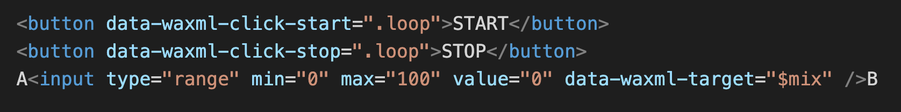

Consider that one were to offer an additional, compressed version of select broadcasted content to increase intelligibility in noisy environments.
You are about participate in a sound test where varying amounts of compression will be applied to sound files and you will be asked to give your opinion on what would be a good amount of compression for such a feature. The effect should be noticable, it should however not degrade the sound quality too much or make the content straining to listen to.
The connections from HTML to let the buttons and slider control WebAudioXML is using the data-waxml attributes:
 AB AB